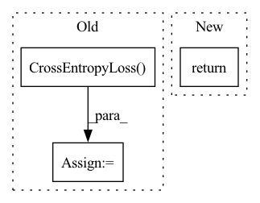

Pattern ID :33105

Before Change
)
token_logits = outputs.logits
loss = nn.CrossEntropyLoss()(token_logits.view(-1, token_logits.size(-1)), labels.view(-1))
return loss
After Change
if self.label_smoothing:
return self.compute_labelsmooth_loss(outputs.logits, labels)
return outputs.loss
In pattern: SUPERPATTERN
Frequency: 5
Non-data size: 3
Instances
Fragment ID: 95765893
Project Name: rucaibox/textbox
Commit Name: e0d4c2c5018ccebbe7d6a916c85741e743920116
Time: 2021-10-21
Author: 1020139164@qq.com
File Name: textbox/model/Seq2Seq/bart.py
M Class Name: BART
N Class Name: BART
M Method Name: forward(3)
N Method Name: forward(3)
M Parent Class: Seq2SeqGenerator
N Parent Class: Seq2SeqGenerator
M File Name: textbox/model/Seq2Seq/bart.py
N File Name: textbox/model/Seq2Seq/bart.py
M Start Line: 68
M End Line: 81
N Start Line: 64
N End Line: 83
'>
Before Change
class_w = tf.convert_to_tensor(class_w, dtype=tf.float32)
self.criterion = torch.nn.CrossEntropyLoss(weight=class_w, ignore_index=-1)
else:
self.criterion = torch.nn.CrossEntropyLoss(ignore_index=-1)
self.deform_fitting_mode = config.deform_fitting_mode
self.deform_fitting_power = config.deform_fitting_power
self.deform_lr_factor = config.deform_lr_factor
self.repulse_extent = config.repulse_extent
After Change
// self.reg_loss = 0
// self.l1 = nn.L1Loss()
return
def organise_inputs(self, flat_inputs):
cfg = self.cfg
'>
Fragment ID: 95765895
Project Name: isl-org/open3d-ml
Commit Name: 87ca7bd50781d154e3d025de7d057a08a0f37575
Time: 2020-08-21
Author: sanskaragrawal107@gmail.com
File Name: ml3d/tf/models/kpconv.py
M Class Name: KPFCNN
N Class Name: KPFCNN
M Method Name: __init__(2)
N Method Name: __init__(2)
M Parent Class: tf.keras.Model
N Parent Class: tf.keras.Model
M File Name: ml3d/tf/models/kpconv.py
N File Name: ml3d/tf/models/kpconv.py
M Start Line: 632
M End Line: 732
N Start Line: 46
N End Line: 146
'>
Before Change
shift_logits = lm_logits[..., :-1, :].contiguous()
shift_labels = labels[..., 1:].contiguous()
// Flatten the tokens
loss_fct = nn.CrossEntropyLoss(ignore_index=-1)
loss = loss_fct(shift_logits.view(-1, shift_logits.size(-1)),
shift_labels.view(-1))
outputs = (loss,) + outputs
After Change
head_mask=head_mask)
hidden_states = transformer_outputs[0]
lm_logits = self.lm_head(hidden_states)
return lm_logits
if __name__ == "__main__":
from attrdict import AttrDict
'>
Fragment ID: 95765894
Project Name: audioku/cross-accent-maml-asr
Commit Name: 4269deef92de0ea7b871fd3e1b7a9cd0a7dc4664
Time: 2019-11-04
Author: samuel.cahyawijaya@gmail.com
File Name: modules/cpt2.py
M Class Name: CPT2LMHeadModel
N Class Name: CPT2LMHeadModel
M Method Name: forward(9)
N Method Name: forward(10)
M Parent Class: GPT2LMHeadModel
N Parent Class: GPT2LMHeadModel
M File Name: modules/cpt2.py
N File Name: modules/cpt2.py
M Start Line: 353
M End Line: 375
N Start Line: 369
N End Line: 370
'>
Before Change
"starting training process of client [{}]".format(id))
SerializationTool.deserialize_model(self._model, model_parameters)
criterion = torch.nn.CrossEntropyLoss()
data_loader = self._get_dataloader(id=id, batch_size=batch_size)
optimizer = torch.optim.SGD(self._model.parameters(), lr=lr)
self._train_alone(id,
After Change
// aggregate model parameters
return self.aggregator(param_list)
else:
return param_list
'>
Fragment ID: 95765891
Project Name: smilelab-fl/fedlab
Commit Name: 16befdf9173a4b4f4430f456b5353765c6d4d3e3
Time: 2021-08-08
Author: 928255708@qq.com
File Name: fedlab/core/client/serial_trainer.py
M Class Name: SerialTrainer
N Class Name: SerialTrainer
M Method Name: train(5)
N Method Name: train(7)
M Parent Class: ClientTrainer
N Parent Class: ClientTrainer
M File Name: fedlab/core/client/serial_trainer.py
N File Name: fedlab/core/client/serial_trainer.py
M Start Line: 139
M End Line: 175
N Start Line: 121
N End Line: 150
'>
Before Change
//print(sequence_output.shape)
prediction_scores = self.MLMhead(sequence_output)
//print(prediction_scores.shape) ////(32,192,105879)
loss_fct = torch.nn.CrossEntropyLoss() // -100 index = padding token
label = label.cuda()
masked_lm_loss = loss_fct(prediction_scores.view(-1, self.config.vocab_size), label.view(-1))
//print(masked_lm_loss)
After Change
return self.score(self.query(*Q), self.doc(*D))
if mode == "qlm":
return self.qlm_score(Q,D,label)
def query(self, input_ids, attention_mask):
'>
Fragment ID: 95765896
Project Name: hannawong/colxlm
Commit Name: f2b7324027b5065806e55151805a16a36ae1bd0b
Time: 2021-11-21
Author: zh-wang17@mails.tsinghua.edu.cn
File Name: colXLM/modeling/colbert.py
M Class Name: ColBERT
N Class Name: ColBERT
M Method Name: forward(5)
N Method Name: forward(5)
M Parent Class: BertPreTrainedModel
N Parent Class: BertPreTrainedModel
M File Name: colXLM/modeling/colbert.py
N File Name: colXLM/modeling/colbert.py
M Start Line: 117
M End Line: 130
N Start Line: 52
N End Line: 52